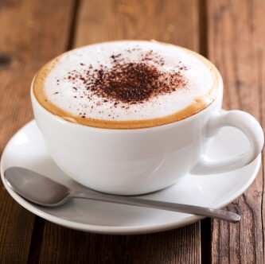
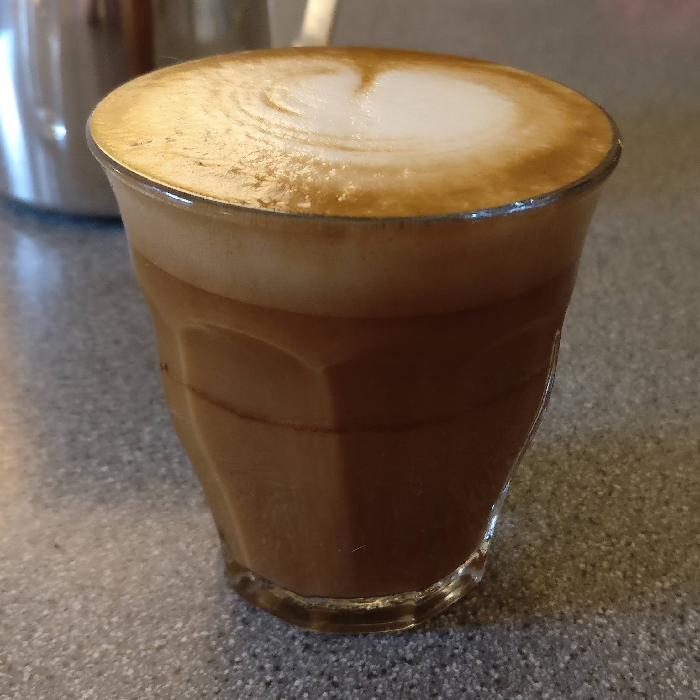
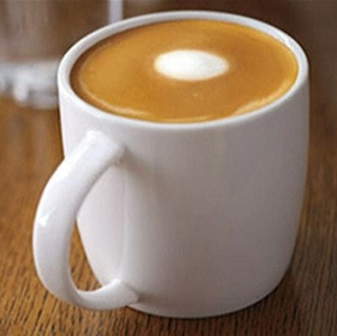
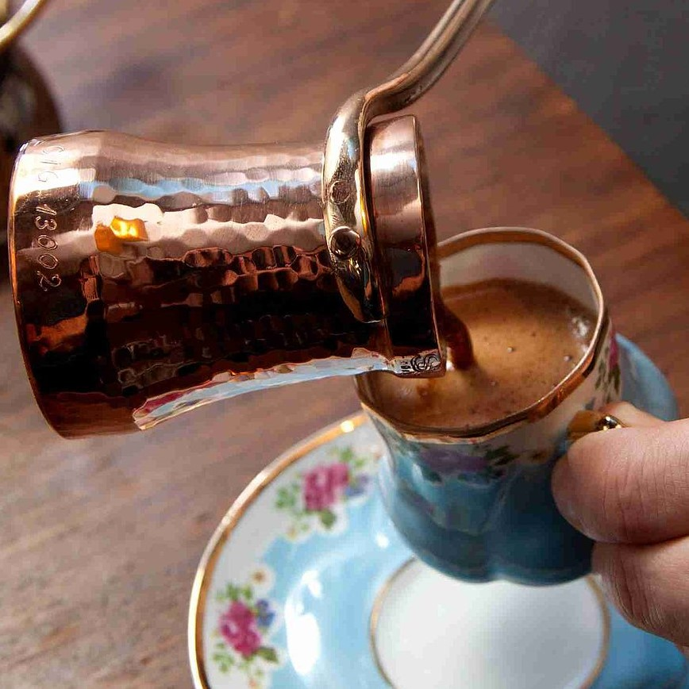
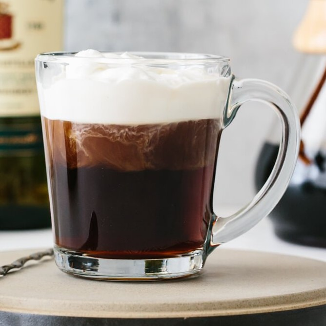
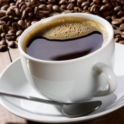

Coffees of the World
| Image |
Name |
Country of Origin |
Color |
Ingredients |
Description |
|  |
Cappuccino |
Italy |
Black, Shades of brown, beige, white |
- Espresso
- Steam milk foam
- Hot milk
|
A single or double shot of espresso topped with froth from steamed milk. |
|  |
Cortado |
Spain |
Shades of brown, white |
|
Equal amounts of espresso and milk neutralizes the bitterness |
|  |
Flat White |
Australia |
Light browns, white |
- Double shot of espresso
- Lightly steamed milk
|
A small amount of steamed milk is added to espresso while keeping the bold flavor of coffee |
|  |
Turkish Coffee |
Turkey |
Dark Brown |
- Extra fine ground coffee
- Cold water
- Sugar (optionl)
|
Brewed in a tradional cezve over low heat. Results in a strong and rich coffee |
|  |
Irish Coffee |
Ireland |
Dark Brown |
- Black coffee
- Irish whiskey
- Brown Sugar
- Cream
|
Coffee, whiskey, and brown sugar are stirred together then topped with a layer of cream. |
 |
Café au lait |
France |
Shades of Brown |
|
Tradionally, warmed milk is added in equal amounts to French press coffee |
|  |
Caffè Americano |
Italy |
Black, Dark Brown |
|
Espresso is diluted with hot water resulting in a milder drink |